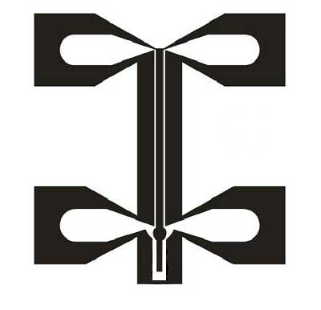
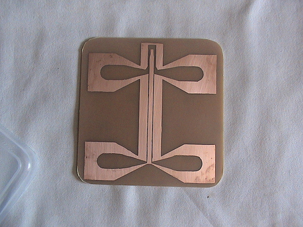
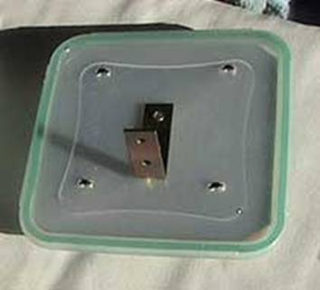
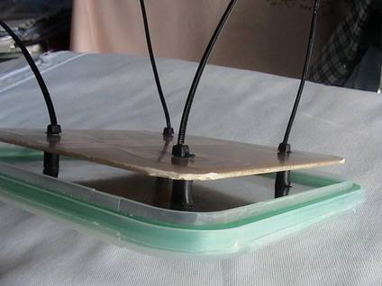
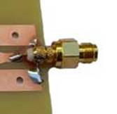
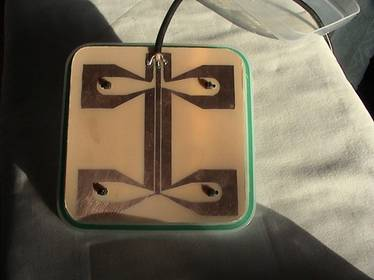
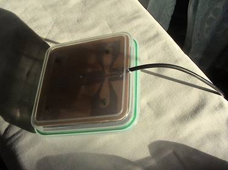

Antena de Mariposa
Características • Ganancia (Gain): 12 dBi • Ancho Del Haz: 80 grados • Frecuencia: 2400 MHz - 2484 MHz • Alcance:
• VSWR: 1.5: 1 • Polarización: Lineal, Vertical. • Conector SMA • Impedancia: 50 Ohmios |
Arriba muestro la versión comercial de esta antena junto a sus características Aquí os muestro el fotolito y la placa de circuito impreso ya preparado para ser montado en la caja que hemos elegido solo falta hacer los taladros necesarios para los separadores de plástico de 5mm
 
Lo primero que preparamos es el reflector que es una simple chapa que la montamos en la tapa, junto con a una escuadra que nos servirá para sujetarla antena a un soporte y ponemos los separadores de plástico sujetados con unas bridas de plástico como se ve en la imagen.
 
Después cortamos los sobrantes de las bridas y soldamos el cable directamente sobre el circuito impreso ó ponemos un conector como en la imagen.
  
Y por ultimo se coge y se mete en la caja como se muestra en la imagen y a disfrutar de ella.